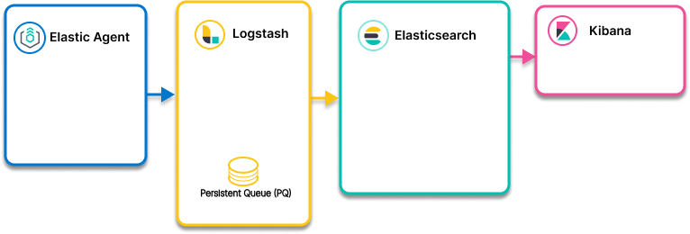

Elastic Agent to Logstash to Elasticsearchedit
- Ingest models
- Elastic Agent to Elasticsearch using Logstash for advanced use cases such as enrichment, buffering, network bridging, multiple endpoints

Elastic Agent to Logstash to Elasticsearch architecturesedit
- 10. Elastic Agent to Logstash (for enrichment) to Elasticsearch
- 11. Elastic Agent to Logstash (for enrichment) to Elasticsearch: Enrichment based on fields in Elastic Agent data
- 12. Elastic Agent to Logstash to Elasticsearch: Logstash Persistent Queue (PQ) for buffering
- 14. Elastic Agent to Logstash to Elasticsearch: Logstash to bridge networks
- 13. Elastic Agent to Logstash for routing to multiple Elasticsearch clusters and/or additional destinations